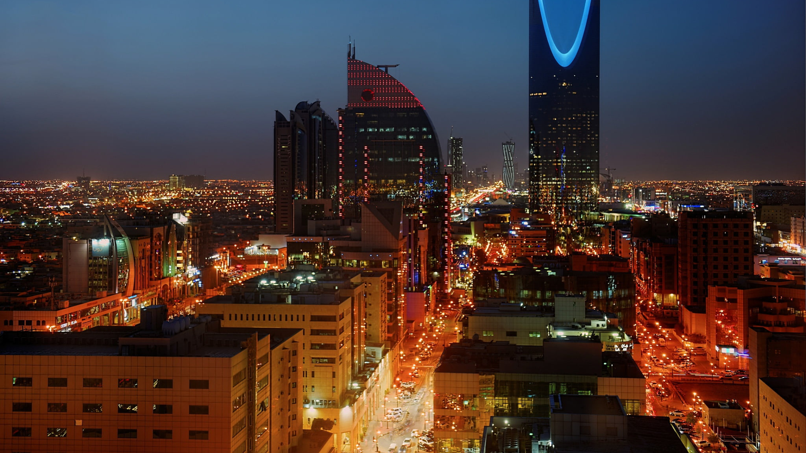
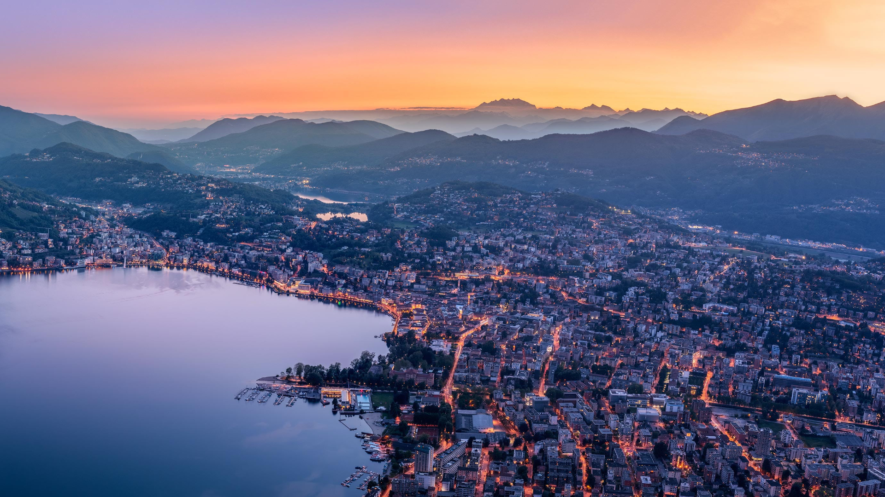
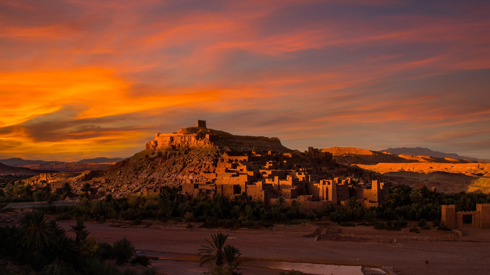

Experiencing grace in Riyadh

Riyadh(/riːˈjɑːd/,[3] Arabic: الرياض, romanized: 'ar-Riyāḍ, lit.: 'The Gardens' [ar.riˈjaːdˤ] Najdi
pronunciation: [er.rɪˈjɑːðˤ]), formerly known as Hajr al-Yamamah, is the capital and largest city of
Saudi Arabia. It is also the capital of the Riyadh Province and the centre of the Riyadh Governorate. It
is the largest city on the Arabian Peninsula, and is situated in the center of the an-Nafud desert, on
the eastern part of the Najd plateau. The city sits at and receives around 5 million tourists each year,
making it the forty-ninth most visited city in the world and the 6th in the Middle East. Riyadh had a
population of 7.6 million people in 2019, making it the most-populous
Read more
visiting nature in Indonesia

Republic of Indonesia,[b] is a country in Southeast Asia and Oceania between the Indian and Pacific
oceans. It consists of over 17,000 islands, including Sumatra, Java, Sulawesi, and parts of Borneo and
New Guinea. Indonesia is the world's largest archipelagic state and the 14th-largest country by area, at
1,904,569 square kilometres (735,358 square miles). With over 275 million people, Indonesia is the
world's fourth-most populous country and the most populous Muslim-majority country. Java, the world's
most populous island, is home to more than half of the country's population.
As the third largest democracy, Indonesia is a presidential republic with an elected legislature.
Read more
Trudge in Morocco

Morocco (/məˈrɒkoʊ/ (listen)),[note 3] officially the Kingdom of Morocco,[note 4] is a country in the
Maghreb region of North Africa. has land borders with Algeria to the east, and the disputed territory of
Western Sahara to the south.Melilla and Peñón de Vélez de la Gomera, and several small
Spanish-controlled islands off its coast.[15] It spans an area of 446,300 km2 (172,300 sq mi)[16] or
710,850 km2 (274,460 sq mi),[b] with a population of roughly 37 million. Its official and predominant
religion is Islam, and the official languages are Arabic and Berber; the Moroccan dialect of Arabic and
French are also widely spoken. Moroccan identity and culture is a
Read more